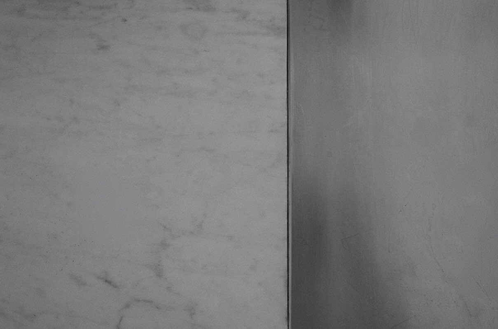
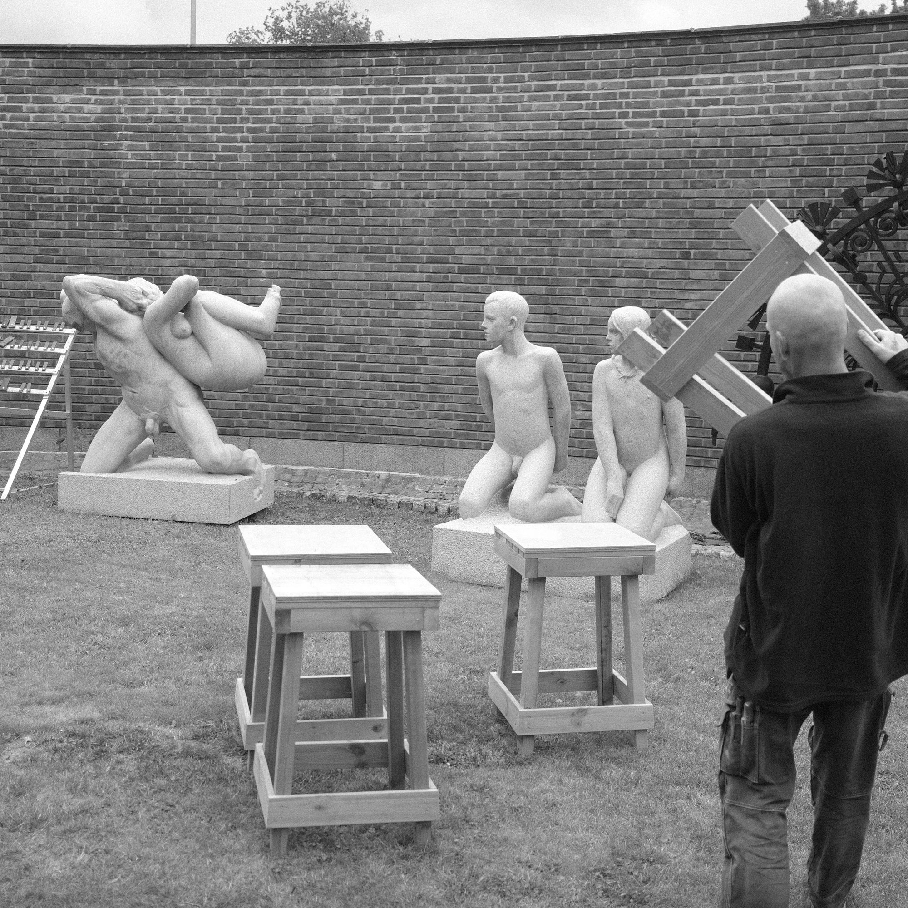
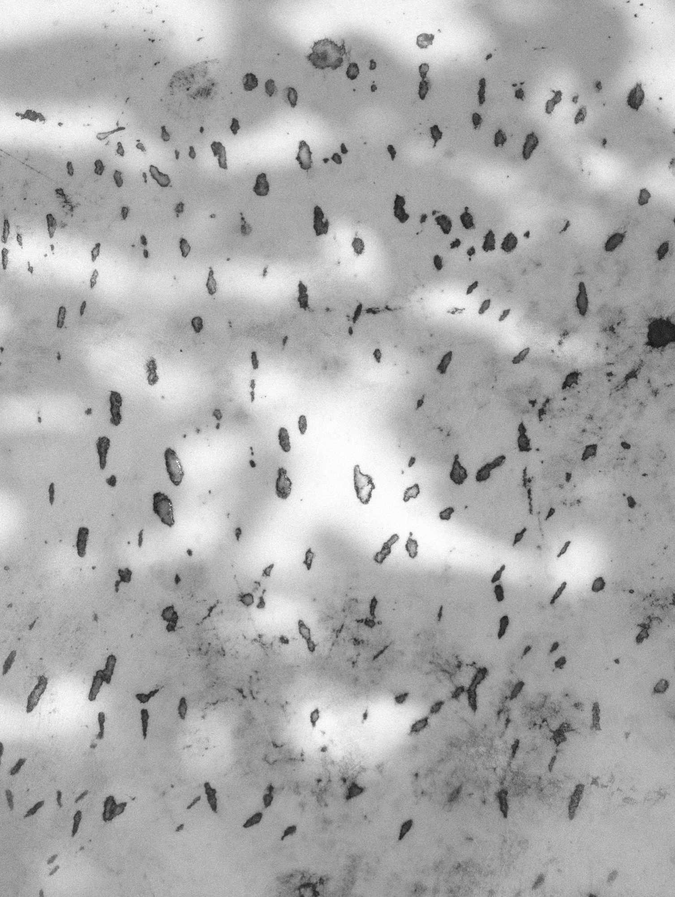
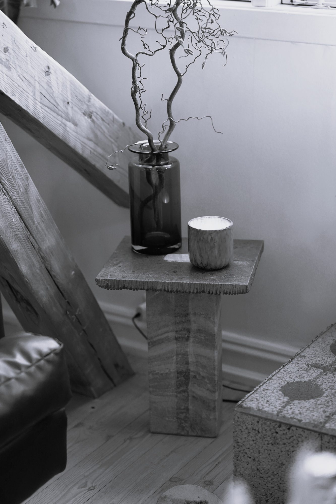
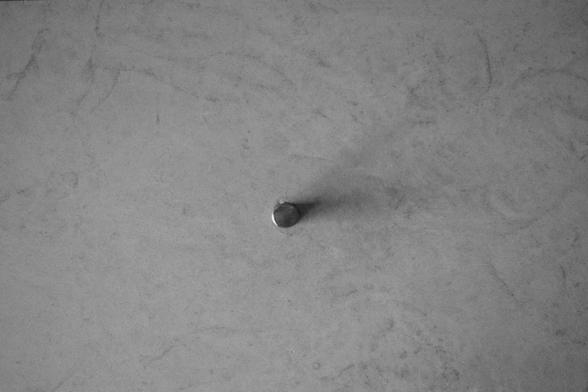
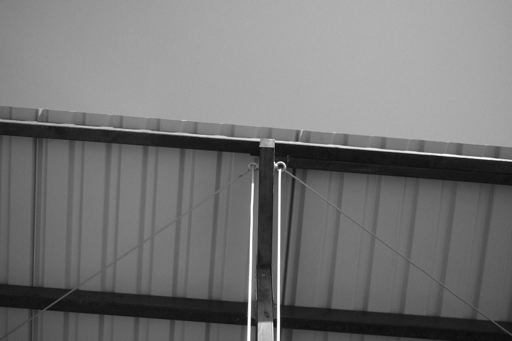
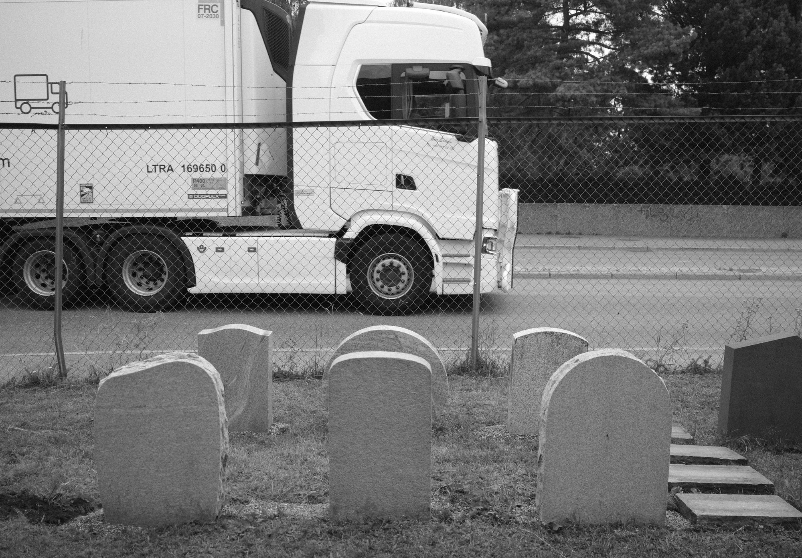
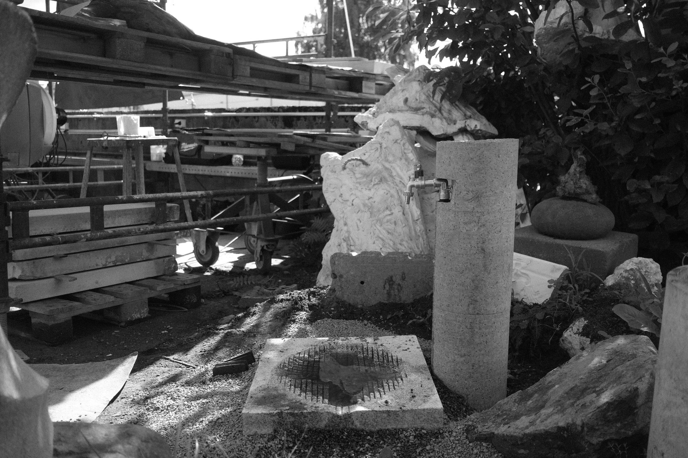
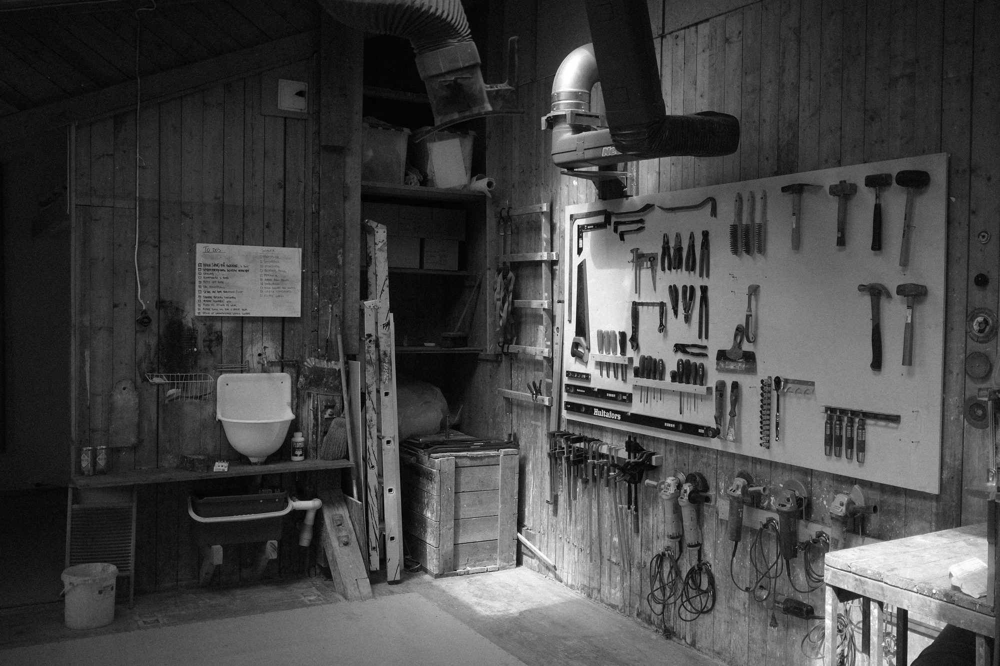

GjenbrukskjøkkenSa steinskulptur

HoggebordVigelandsmuseet

PausebordSa steinskulptur

MasiSidebord

PortlandStuebord

TakSa steinskulptur

UtstillingSa steinskulptur

VannstasjonSa steinskulptur

VerkstedSa steinskulptur
RANDFALS
En kuratert samling av arbeider laget med intensjon, presisjon og ro. Fra enkeltobjekter til hele rom.